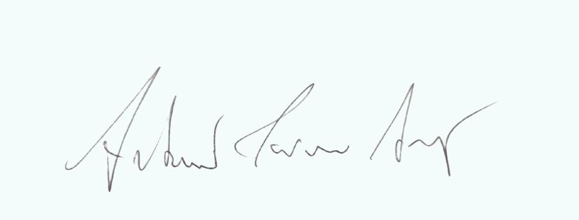
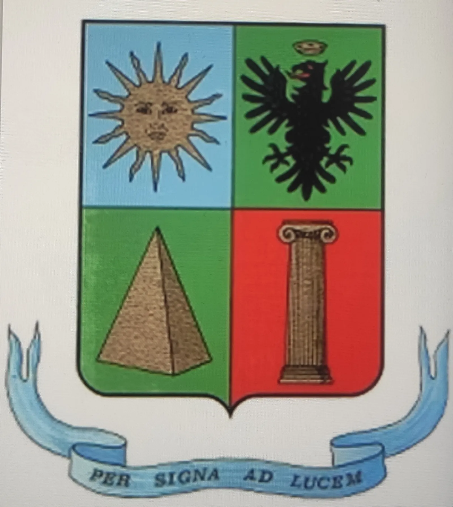

Understand
Welcoming the complexity of one's experience with an attentive, orderly perspective that respects inner timing.
Professional consulting
Analogist
Analogical Disciplines are a set of knowledge and tools that help you connect directly with your emotional and unconscious sphere. Through this approach, it is possible to regain balance, inner freedom and wellbeing, reconnecting logical thinking with deeper emotions. Every day we experience the conflict between rationality and emotion. The Analogical Disciplines, developed by Stefano Benemeglio, psychologist and researcher, offer practical tools to harmonize these two parts and enhance personal potential. They help decode emotional and non-verbal language, which we use unconsciously and which reveals our most authentic needs.

Not a leaf falls unless the unconscious wills it.
Method
Analogical work develops as a path of conscious interpretation of experience, helping to grasp relationships, symbols and dynamics that often remain invisible at first glance.
Welcoming the complexity of one's experience with an attentive, orderly perspective that respects inner timing.
Recognizing symbolic connections and correspondences that help read events in a broader and more meaningful perspective.
Transforming acquired insight into practical orientation, fostering clarity, centering and continuity.
About

I focus on emotional wellbeing through an approach that integrates mind, emotions and body. My work consists of decoding personal emotional and systemic languages to help people regain balance and authenticity in personal, relational and professional life. I collaborate with institutions, associations and schools, working in private and socio-health contexts to promote a culture based on self-knowledge and personal growth.



A course of study dedicated to Analogical Science, symbolic reading of experience and deeper personal awareness processes.
After completing a course of study that allowed me to understand the emotional dynamics behind our behavior and to turn this passion into a true profession, I completed the Top Professional training at the “Stefano Benemeglio” Popular University of Analogical Disciplines. I assisted and collaborated with Stefano Benemeglio during sessions and educational activities throughout Italy: seminars, workshops, labs and events, deepening the acquired skills in Sistemi Induttivi Benemegliani®, laws of the unconscious, Comunicazione Analogica®, emotional and non-verbal language, Filosofia Analogica®, consciousness, dreams and inner freedom, and Fisioanalogia®, the link between body and emotions.
This experience allowed me to integrate theory and practice, developing an effective and personalized approach to personal wellbeing.
Consulting activities for those going through change, seeking interpretative guidance, or wishing to face their path with greater clarity.
Each path is born from the meeting of rigor, sensitivity and the ability to read each person's uniqueness, without reducing complexity to generic formulas.
I believe happiness and inner freedom begin with deep self-knowledge. My goal is to help you recognize and harmonize your emotions, so you can live more consciously, authentically and peacefully.
I carry forward Analogical Philosophy as a tool for growth, balance and personal fulfillment.
Path
The Analogist is a helping professional who guides you in understanding emotions and dialoguing with your emotional core. Through Comunicazione Analogica®, Sistemi Induttivi Benemegliani®, Filosofia Analogica® and Fisioanalogia®, I help people:
During sessions, I guide the person through a process of recognition and rebalancing between the logical part (“I know what I should do”) and the emotional part (“I freeze and cannot do it”). The result is a real and lasting change, generated by collaboration between mind and heart.
Session
Work with the Analogist does not stop at listening; it aims at concrete action. The session is structured into key phases:
How it works
Through reading non-verbal signals such as movements, micro-expressions and unconscious gestures, the Analogist interprets what the unconscious communicates and helps the person transform it into awareness.
Approfondimento
My work is for people who want to improve the quality of their emotional and relational life. Analogical intervention can be useful in cases of:
I offer individual paths oriented to autonomous wellbeing management, providing practical tools to maintain balance and serenity over time.
Frequently Asked Questions
Essential answers to understand the working approach and the structure of the path.
The Analogist is a professional who helps you regain emotional balance. Their role is to align thoughts and emotions, removing inner blocks that often lead to self-sabotage. This profession stems from the studies of Stefano Benemeglio, a psychologist who dedicated his life to understanding human emotions.
During sessions, the Analogist helps you discover what is hidden in your unconscious and align your will with your emotions. They use different methods, including non-verbal communication and direct dialogue with the unconscious.
The Analogist can help in many different areas because emotions influence every aspect of our life.
It differs from psychologists and psychotherapists for its unique way of working with the unconscious and emotional sphere, both theoretically and practically.
During the session, the Analogist does not only listen.
They work with the person to understand what the rational part wants (“I need to change the situation”) and what the emotional part says instead (“I’m afraid I can’t do it”).
The Analogist’s task is to find a solution that works for both parts.
During the session, the Analogist does not only listen.
They work with the person to understand what the rational part wants (“I need to change the situation”) and what the emotional part says instead (“I’m afraid I can’t do it”).
The Analogist’s task is to find a solution that works for both parts.
Contacts
Contact me for a consultation
Email seranti.analogista@gmail.com
Phone +393395954816
CONSULTATIONS AVAILABLE IN:
Rome – Via Urbino 43, Via dell’Amba Aradam 27
Santa Maria di Leuca (LE) – Via Dante Alighieri 95